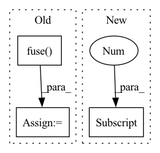

Pattern ID :26534
Before Change
if i < len(self.output_convs) - 1:
out = self.fuse([x[i+1], inters[i+1], out]) // P4in + P4td + resize(P3td)
else:
out = self.fuse( [inters[i+1], out]) // P7in + resize(P6td)
outputs.append(conv(out)) // P4out = conv(P4in + P4td + resize(P3td))
return outputsAfter Change
outs[0] = tds[0]
for i in range(self.num_levels - 2):
outs[i+1] = self.out_fuses[i]([x[i+1], tds[i+1], self.downsample(tds[i])]) // P4in + P4td + resize(P3td)
outs[-1] = self.out_fuses[-1]([x[-1] , self.downsample(tds[-2])]) // P7in + resize(P6td)
return outs
In pattern: SUPERPATTERN
Frequency: 4
Non-data size: 3
Instances Fragment ID: 79605070
Project Name: gau-nernst/vision-toolbox
Commit Name: 0844b6bcb142e63b09cf6ae44e5087c20d52c380
Time: 2022-04-10
Author: gau.nernst@yahoo.com.sg
File Name: vision_toolbox/necks.py
M Class Name: BiFPNLayer
N Class Name: BiFPNLayer
M Method Name: forward(2)
N Method Name: forward(2)
M Parent Class: nn.Module
N Parent Class: nn.Module
M File Name: vision_toolbox/necks.py
N File Name: vision_toolbox/necks.py
M Start Line: 163
M End Line: 180
N Start Line: 160
N End Line: 172
Before Change
out = F.interpolate(out, scale_factor=2., mode="nearest")
lat = laterals.pop()
out = self.fuse( out, lat)
out = o_conv(out)
outputs.append(out)
return outputs[::-1]After Change
outputs = [laterals.pop()]
for o_conv in self.output_convs:
out = F.interpolate(outputs[-1] , scale_factor=2., mode="nearest")
out = self.fuse([out, laterals.pop()])
outputs.append(o_conv(out))
Fragment ID: 79605071
Project Name: gau-nernst/vision-toolbox
Commit Name: 9f25661fb657cc20edd94ac72c43c09aeb9c0a7d
Time: 2022-01-12
Author: gau.nernst@yahoo.com.sg
File Name: vision_toolbox/necks.py
M Class Name: FPN
N Class Name: FPN
M Method Name: forward_features(2)
N Method Name: forward_features(2)
M Parent Class: BaseNeck
N Parent Class: nn.Module
M File Name: vision_toolbox/necks.py
N File Name: vision_toolbox/necks.py
M Start Line: 70
M End Line: 83
N Start Line: 61
N End Line: 67
Before Change
return out1, out2
"""
out = self.fuse( outs, training=training)
out1, out2 = self.contrast(outs[0], outs[1], inputs[2])
return self.head(out, training=training), out1, out2
After Change
if classifier:
//out = self.fuse(outs, training=training)
return self.head(outs[1] , training=training)
else:
out1, out2 = self.contrast(outs[0], outs[1], inputs[2])
return out1, out2 Fragment ID: 79605082
Project Name: pliang279/multibench
Commit Name: 50c6848b1f4b0a9f497fcc48a01e4869e6925de6
Time: 2021-05-05
Author: ztwu_nil@zju.edu.cn
File Name: training_structures/Contrastive_Learning.py
M Class Name: MMDL
N Class Name: MMDL
M Method Name: forward(4)
N Method Name: forward(4)
M Parent Class: nn.Module
N Parent Class: nn.Module
M File Name: training_structures/Contrastive_Learning.py
N File Name: training_structures/Contrastive_Learning.py
M Start Line: 26
M End Line: 45
N Start Line: 26
N End Line: 40
Before Change
return out1, out2
"""
out = self.fuse( outs, training=training)
out1, out2 = self.contrast(outs[0], outs[1], inputs[2])
return self.head(out, training=training), out1, out2
After Change
if classifier:
//out = self.fuse(outs, training=training)
return self.head(outs[1] , training=training)
else:
out1, out2 = self.contrast(outs[0], outs[1], inputs[2])
return out1, out2 Fragment ID: 79605081
Project Name: pliang279/multibench
Commit Name: 2b7e451ed36b87c0bd825a1f8891fe752f5a143e
Time: 2021-05-05
Author: ztwu_nil@zju.edu.cn
File Name: training_structures/Contrastive_Learning.py
M Class Name: MMDL
N Class Name: MMDL
M Method Name: forward(4)
N Method Name: forward(4)
M Parent Class: nn.Module
N Parent Class: nn.Module
M File Name: training_structures/Contrastive_Learning.py
N File Name: training_structures/Contrastive_Learning.py
M Start Line: 26
M End Line: 45
N Start Line: 26
N End Line: 40